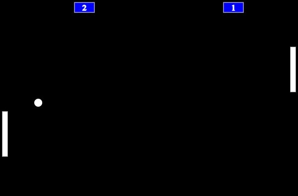
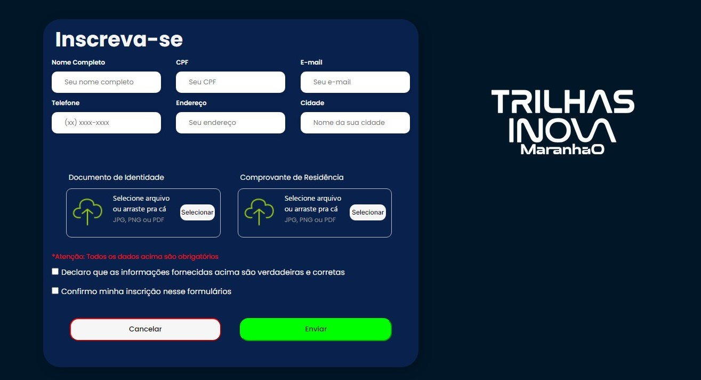
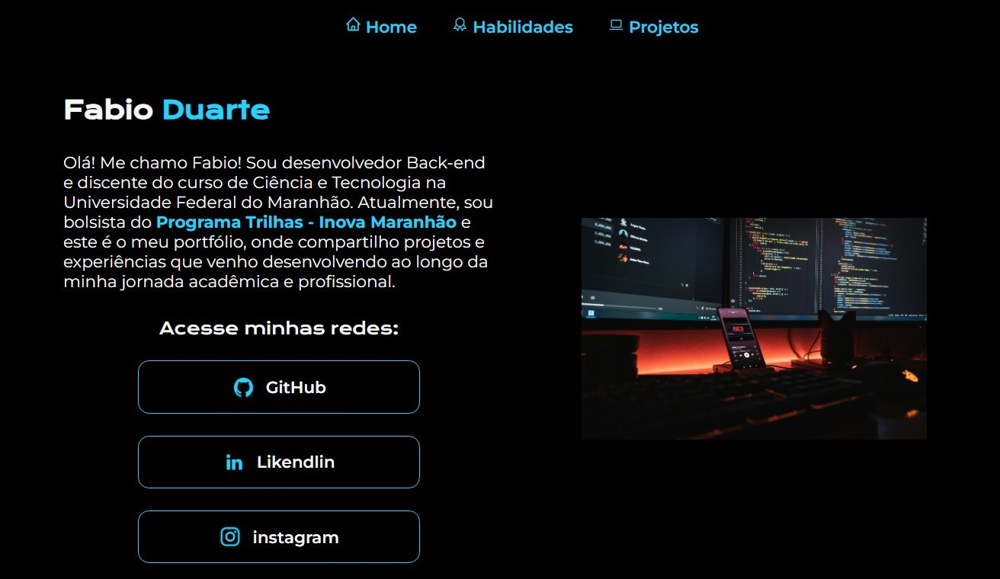

Meus projetos
Compartilho aqui alguns frutos de minha jornada no Programa Trilhas - Inova Maranhão. Em cada projeto, tive a oportunidade de colocar em prática as habilidades adquiridas ao longo do programa. Destaco o segundo desafio, no qual tive a oportunidade de criar minha primeira página web, um formulário de inscrição, utilizando HTML e CSS. No terceiro desafio, este portfólio, aprofundei-me ainda mais, utilizando HTML, CSS e JavaScript para tornar minha página interativa e dinâmica. Além disso, explorei o design responsivo, garantindo uma experiência consistente em diferentes dispositivos.


